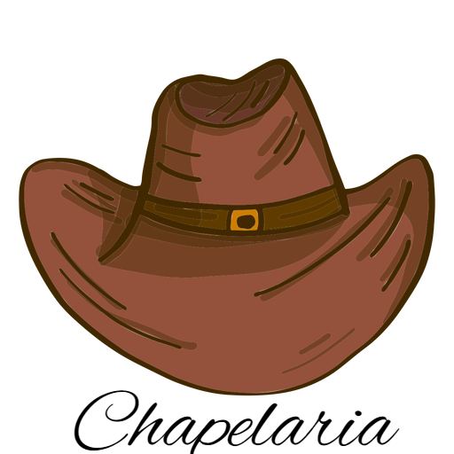
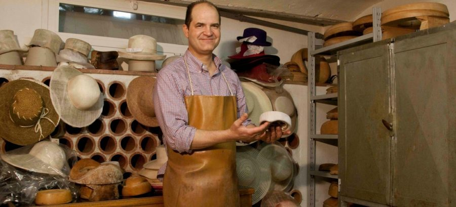

|  | Home | Nossa Historia | Contato |
| As primeiras coberturas para cabeça apareceram em torno do ano 4.000 a.C. no antigo Egito, na Babilônia e na Grécia quando o costume de usar faixas na cabeça tinha o intuito de proteger o cabelo. | |
| Depois da Renascença (século XIV-XVI), os chapéus masculinos adquiriram diversos formatos, sendo ricamente enfeitados, e usados pelos homens poderosos. Data desta época o aparecimento das boinas, na Itália, constituídas de uma peça circular de tecido franzido nas laterais, contendo uma faixa por onde passava um cordão ajustável. | |
Historio do ChapeuNão há muitos registros oficiais de chapéus antes de 3.000 a.C, eles provavelmente eram comuns antes disso. Uma das primeiras representações pictóricas de um chapéu aparece em uma pintura do túmulo de Tebas, no Egito, que mostra um homem vestindo um chapéu de palha cónico, datado de cerca de 3200 aC. Chapéus eram comumente usadas no Egito antigo. Muitos egípcios da classe alta raspavam a cabeça, em seguida, cobriam com uma mantilha. Mesopotâmicos antigos, muitas vezes usavavam chapéus cônicos. Outros primeiros chapéus incluem o Pileus, um crânio simples como tampa; o barrete frígio, usado por escravos libertados na Grécia e em Roma (que se tornou um ícone na América durante a Guerra Revolucionária e da Revolução Francesa, como um símbolo da luta pela liberdade contra a monarquia); e os gregos petasos, o primeiro chapéu conhecido com uma borda. As mulheres usavam véus, lenços, bonés e capuzes, toucas. Na Idade Média, os chapéus eram um indicador de status social e usado para destacar determinados grupos.  |
|
Todos os direitos reservados |
|